Home


Navigating the Unix Shell (Bash)
Creating a bash shell
We already know how to create a new folder and open a bash shell from it, but what if we just open bash on its own how do we find the directory we want.
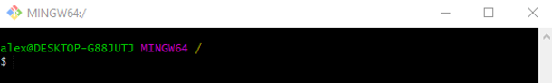Wherever bash opens cd takes you to your home directory. ls lists everthing in that directory
ls -F shows us what type they are by adding an extra character:
- @ is a symlink
- / is a directory
- | is a named pipe
- = is a socket
- * is an executable file
Navigating to our folder
My folder's location is C:\Users\alex\Desktop\HelloWorld\HelloWorld. pwd prints the path of the current working directory.
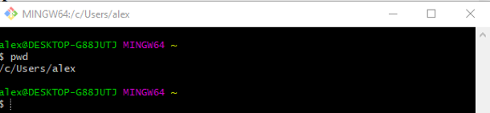So we are currently in /c/Users/alex and need to get to C:\Users\alex\Desktop\HelloWorld\HelloWorld
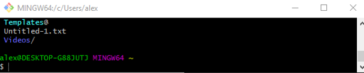ls listed too many files to show but one of them was Desktop. cd and the folder name takes you into that folder.
cd Desktop to get into Desktop, cd HelloWorld to get into HelloWorld and cd HelloWorld again to get into the folder called HelloWorld.
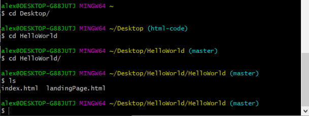Making a directory
Now we are where we wanted to be we can make new directory with mkdir
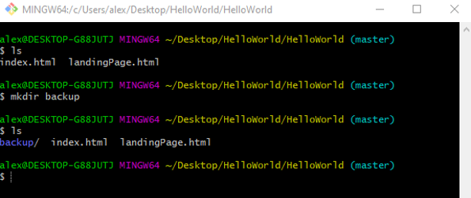Making a file for the directory
We can create files to go in this directory by going into the new directory cd backup using nano or touch as we did previously.
Copying a file into a directory
we can also copy files with cp, we can copy landingPage.html into our new directory backup using the name of the file we want to move and its new location with cp landingPage.html backup/
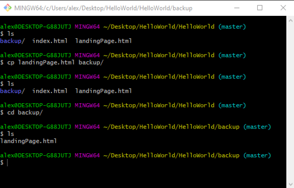Copying a directory
We can also copy directories with cp - r the name of the directory we want to copy and the name for the new copy cp -r backup/ backup_again
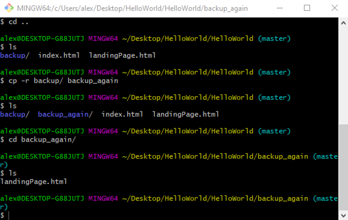Removing a file
We can remove a file using rm and the name of the file rm landingPage.html
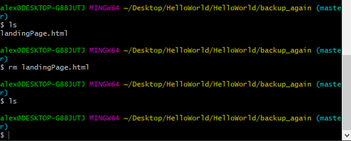Removing a directory
We can remove the backup_again directory using rm -ir and the directory name rm -ir backup_again
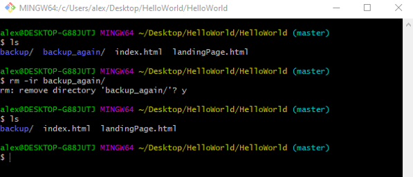Moving files
We can move index.html into landingPage.html with mv current file name and file name where it is going (target) mv index.html landingPage.html
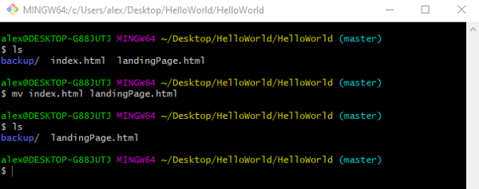Moving Directories
We only have one directory here so need to make a new one before we can move anything into it. We can make a directory called new_backup using mkdir new_backup then move the backup directory into the new-backup directory
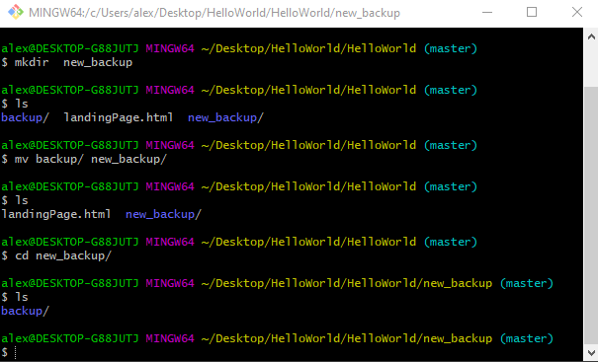Now the backup directory has moved into the directory called new_backup.